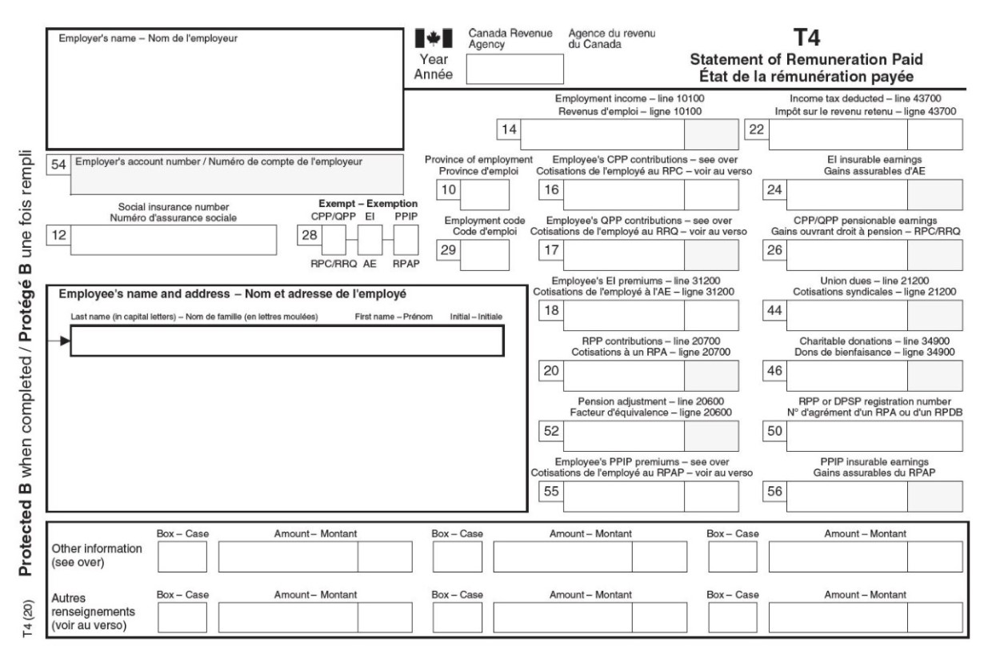
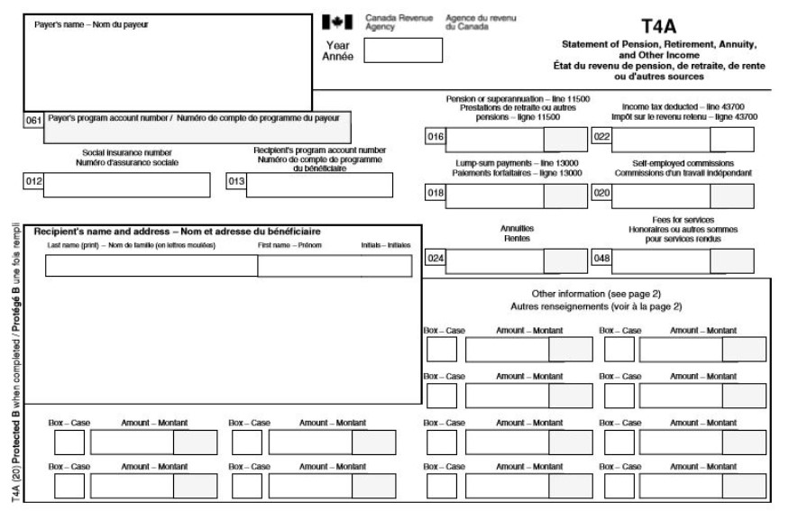
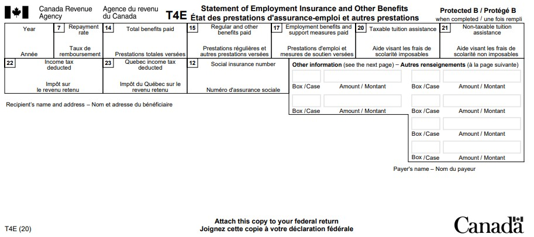
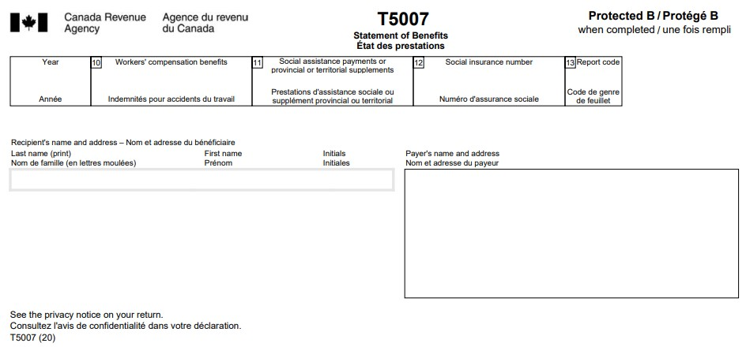

Preparing to do your taxes - Learn about your taxes
Learn about your taxes
Preparing to do your taxes
Find out what you’ll need to know before doing your taxes and the different ways to do them.
Documents you will need lesson completed
What kind of personal data, information slips, and supporting documents you need to do your taxes.
Time to complete: about 6 minutes
This lesson includes
-
4 sections
- 2 questions to test yourself
Documents you will need (part 1 of 4)
Personal information
When you are doing your taxes, a key piece of personal information to have ready is your social insurance number (SIN). Service Canada issues this nine-digit number (ex. 111‑111‑111) and the government uses it to identify you.
The Canada Revenue Agency (CRA) uses your SIN to connect your income tax and benefit return to your account. If you have a spouse or a common-law partner, you will also need their SIN and net income.
Income tax and benefit return
- Income tax and benefit return
If you have done your taxes before, you may need to gather some more information about your tax account with the CRA.
This could include:
- your access code
- your carryforward amounts
- your Retirement Savings Plan (RRSP) details
Access code
- Access code
Carryforward amounts
- Carryforward amounts
Registered Retirement Savings Plan (RRSP)
- Registered Retirement Savings Plan (RRSP)
These pieces of information can be found:
- online in My Account
- on your notice of assessment from the previous tax year
- by contacting the CRA
My Account
- My Account
Notice of assessment
- Notice of assessment
Resources are available
After you finish this lesson, these resource links will be available:
- Contacting the CRA
- Registered Retirement Savings Plan (RRSP)
Documents you will need (part 2 of 4)
Information slips
An information slip, commonly referred to as a slip, is a tax document that gives you details about your income and related deductions for a particular tax year. These slips are given to you by whoever paid you the income, known as the issuer.
The issuer is most often your employer, but other examples include:
- your financial institution
- your school
- a government department such as Service Canada
The issuer of your slip must generally give you the slip before March 1 of the following year. They will also send a copy of the slip to the CRA. You may receive multiple slips, depending on what your income situation was during the year.
Many of these tax slips are available in My Account or through the Auto-fill my return service.
Example: Receiving more than one slip
Sora worked two jobs last year and received employment insurance (EI) regular benefits for a few weeks. Sora will receive a total of three slips: one from each employer and one from Service Canada.
Employment Insurance (EI)
- Employment Insurance (EI)
Information slips
Your income information is reported on the slip in numbered boxes that refer to a specific line on the tax return. Each slip will have instructions about where to report this information on your tax return.
To do your taxes, you will need all of your information slips for the income you earned during the year. If you cannot get a copy of your slip to do your taxes by the income tax deadline, you can estimate your income by using your pay stubs or financial statements.
Common information slips
T4 slip: Statement of Remuneration Paid
This slip shows your employment income. The boxes on the T4 slip should show the same information on the last pay stub you received at the end of the year.
Compare your T4 slip to that paystub to make sure the amounts are the same. If you notice any differences, you should discuss them with your employer and resolve the situation before contacting the CRA.
Example of a T4 slip
Is this slip hard to read? Don't worry, we will provide you with a link to the PDF (hi-res) version after this lesson.
T4A slip: Statement of Pension, Retirement, Annuity, and Other Income
This slip shows several different types of income, such as
- scholarships
- payments from a Registered Education Savings Plan (RESP)
- pensions
Registered Education Savings Plan (RESP)
- Registered Education Savings Plan (RESP)
Example of a T4A slip
Is this slip hard to read? Don't worry, we will provide you with a link to the PDF (hi-res) version after this lesson.
T4E slip: Statement of Employment Insurance and Other Benefits
Service Canada uses this slip to report benefits they send, such as employment insurance (EI) benefits and tuition assistance.
Example of a T4E slip
Is this slip hard to read? Don't worry, we will provide you with a link to the PDF (hi-res) version after this lesson.
T5007 slip: Statement of Benefits
This slip shows the following types of income:
- workers’ compensation benefits
- social assistance payments
- provincial or territorial supplements
Example of a T5007 slip
Is this slip hard to read? Don't worry, we will provide you with a link to the PDF (hi-res) version after this lesson.
Resources are available
After you finish this lesson, this resource link will be available:
- Types of information (tax) slips
Documents you will need (part 3 of 4)
Information about income not reported on a slip
Not all income will be reported on an information slip. This could include tips or occasional earnings, such as payments received through a food delivery service. Whether or not your income is shown on a slip, you are still responsible for reporting it on your tax return.
To report this income, you may need to gather documents such as financial statements, invoices, or other records.
Tip
It can be helpful to track these types of income over the year so you are not overwhelmed when you do your taxes.
Test yourself
That's correct.
Answer: "Yes"
Arya is responsible for reporting all of her income on her tax return, whether or not she received an information slip.
Sorry, that's incorrect.
Arya is responsible for reporting all of her income on her tax return, whether or not she received an information slip.
Resources are available
After you finish this lesson, this resource link will be available:
- Get ready to do your taxes
Documents you will need (part 4 of 4)
Supporting documents
You can claim certain deductions and tax credits , such as union dues or EI premiums, by using amounts shown on your information slips. Others require receipts, certificates, or additional documents. You are responsible for confirming what supporting documents you need to claim an amount on your tax return.
Deductions
- Deductions
Tax credits
- Tax credits
Resources are available
After you finish this lesson, this resource link will be available:
- All deductions, credits, and expenses
Example: Supporting documents for medical expenses
Jasper’s doctor prescribed him some medication last year. When Jasper bought the medication, his pharmacy issued him a receipt. Jasper kept his receipt and used it to claim the medical expense tax credit when he did his taxes.
Using certified tax software
If you are using certified tax software to do your taxes, you do not need to submit any supporting documents to submit your return to the CRA. If you are doing your taxes on paper, you may need to attach your supporting documents. Whichever method you choose to do your taxes, the CRA may ask to see your supporting documents later. It is the same as when you are bringing an item back to get a refund or a credit. You need proof that you bought this item!
Fast fact
You should keep your documents for six years after you do your taxes.
Test yourself
Sorry, that's incorrect.
You do not need to attach any supporting documents when you do your taxes online. However, Philippe should keep his supporting documents for six years in case the CRA asks to see them.
That's correct.
Answer: "No"
You do not need to attach any supporting documents when you do your taxes online. However, Philippe should keep his supporting documents for six years in case the CRA asks to see them.
Resources are available
After you finish this lesson, this resource link will be available:
- Get ready to do your taxes
Different ways to do your taxes lesson completed
Learn about the methods available for you to do your taxes.
Time to complete: about 10 minutes
This lesson includes
-
8 sections
- Filing electronically: Start this lesson
- Updating your personal information before filing electronically: Start this lesson
- Using Auto-fill my return to simplify the electronic filing process: Start this lesson
- Authorizing a representative
- Attending a free tax clinic
- Using a discounter
- Filing a paper return
- Filing by invitation
- 2 questions to test yourself
Resources: Different ways to do your taxes
- Ways to do your taxes open in new window
- Update your CRA information open in new window
- NETFILE eligibility open in new window
- Auto-fill my return open in new window
Additional resources
- Volunteer at a free tax clinic open in new window
- Order forms and publications open in new window
- Processing times open in new window
- Protect yourself against scams and fraud open in new window
- NETFILE certified tax software open in new window
- Discounter information for individuals open in new window
- Contact the CRA open in new window
Different ways to do your taxes (part 1 of 8)
Filing electronically
The fastest and easiest way to do your taxes is electronically. Once received, it usually takes about 2 weeks for the CRA to process your taxes.
Resources are available
After you finish this lesson, these resource links will be available:
- Processing times
- Different ways to do your taxes
To file electonically, you can choose from any of the available NETFILE certified tax software approved by the Canada Revenue Agency (CRA). The software is available on the following platforms:
- online (web-based)
- desktop download options
- or mobile applications
Many of these options are free to use. For a complete list of available certified software, please visit the NETFILE certified tax software webpage.
Most people can do their taxes electronically, even if it is their first time using a certified tax software, but there are some restrictions. For example, the CRA needs your complete date of birth on file. If you aren’t sure what information is on file, you can contact the CRA before doing your taxes electronically.
Resources are available
After you finish this lesson, these resource links will be available:
- NETFILE eligibility
- NETFILE certified tax software
How electronic filing works
The certified tax software will guide you through the process by asking you questions about your tax situation and doing the calculations for you. This process helps ensure you don’t miss out on any benefits and credits you may be eligible for.
You will:
- enter identification information about yourself, such as your name, address, social insurance number and marital status
- answer questions about the sources of your income and possible deductions
- enter information from your tax slips and receipts
- enter any other necessary information
The software will then:
- calculate your total income, deductions, and any tax credits you are eligible for
- advise you of any issues or errors with your return so you can correct them
- calculate your refund or balance owing
- allow you to view and print the finished tax return
- allow you to send your return to the CRA electronically
- allow you to send an amended tax return using ReFILE
The software will send your income tax and benefit return directly to the CRA through an online service called NETFILE. You can use this service to do your taxes for the current tax year and three prior tax years. If you have any older tax returns to file, you will need to send in a paper tax return. Once you have submitted your tax return, you will receive a confirmation number to keep for your records.
Income tax and benefit return
- Income tax and benefit return
Tax year
- Tax year
Example: Electronic filing processing timeframes
Jeanette heard that doing her taxes electronically would be very simple. She chose to use certified tax software and entered her personal information. Jeanette had only one job during the year, so she entered the information from her T4 slip into the software. The software guided Jeanette through the process and asked questions to make sure she did not miss out on any benefits or credits. Jeanette received her tax refund two weeks after submitting her tax return.
T4 slip
- T4 slip
Different ways to do your taxes (part 2 of 8)
Updating your personal information before filing electronically
You cannot update certain personal information on file with the CRA, such as your address or name, by entering the new information into the certified tax software. Be sure to update this information with the CRA before you use the software.
You may be able to update this information using My Account. By registering for My Account, you can have access to helpful services to complete your tax return more easily.
My Account
- My Account
You can also contact the CRA to make changes to your personal information.
Resources are available
After you finish this lesson, this resource link will be available:
- Update your CRA information
- Contacting the CRA
Different ways to do your taxes (part 3 of 8)
Using Auto-fill my return to simplify the electronic filing process
Auto-fill my return is a secure CRA service that makes doing your taxes simpler. To use this service, you must be registered for My Account and use certified tax software.
Auto-fill my return acts as a link between My Account and the certified tax software you are using. It pulls information the CRA has on file and uses it to quickly fill in parts of your tax return. This includes details from your tax information slips as well as other tax-related information, such as your tuition carryforward amounts . You save time by not entering the information manually, and you also reduce the risk of entering the information incorrectly. Certain amounts, such as tips and occasional earnings not reported on a slip, are not available through Auto-fill my return.
Carryforward amounts
- Carryforward amounts
Keep in mind that this service is able to fill in only the information the CRA has available when you use the service. You are responsible for making sure the information on your tax return is complete and accurate.
Resources are available
After you finish this lesson, this resource link will be available:
- Auto-fill my return
Test yourself
Sorry, that's incorrect.
You must be registered for My Account to use this service. You can’t register for My Account until you have filed your taxes for the first time.
That's correct.
Answer: "No"
You must be registered for My Account to use this service. You can’t register for My Account until you have filed your taxes for the first time.
Different ways to do your taxes (part 4 of 8)
Authorizing a representative
If you are uncomfortable doing taxes yourself, you can authorize a family member, a friend or an accountant to do your taxes for you. You can find an approved tax preparation service provider to do your taxes for a fee. Tax preparation service providers will do your taxes using EFILE certified tax software and will send your tax return electronically to the CRA through an online service known as EFILE. The CRA usually takes 2 weeks to process tax returns filed electronically through the EFILE service.
Different ways to do your taxes (part 5 of 8)
Attending a free tax clinic
The Community Volunteer Income Tax Program (CVITP) allows community organizations to partner with the CRA to organize free tax clinics where eligible people can get their tax returns done for free by volunteers. Most volunteers use EFILE certified software to submit your tax return electronically. Once received, your the CRA usually takes about 2 weeks to process your taxes usually take about 2 weeks to process.
Individuals assisted by the program include:
- Indigenous peoples
- newcomers and refugees
- persons with disabilities
- seniors
- youths and students
- homeless and housing-insecure individuals
- individuals with a modest income
To be eligible, you must have both a modest income and a simple tax situation.
A modest income
Your family income should generally be less than the suggested income levels, based on the size of your family. Family size includes an individual or a couple and their dependants.
| Family size |
Total family income |
|---|---|
| 1 person | $35,000 |
| 2 persons | $45,000 |
| 3 persons | $47,500 |
| 4 persons | $50,000 |
| 5 persons | $52,500 |
| More than 5 persons | $52,500, plus $2,500 for each additional person |
Note: Organizations can modify the total family income levels based on the local economic environment, the population they serve, and their resources.
A simple tax situation
In general, your tax situation is considered simple if you have no income or if your income comes from these sources:
- employment (T4 slip)
- pension (T4A slip)
- benefits, such as Canada Pension Plan (T4A(P) slip), old age security (T4A(OAS) slip), disability insurance (T4E slip), employment insurance (T4E slip), and social assistance (T5007 slip)
- registered retirement savings plans (RRSPs) (T4RSP slip)
- support payments
- scholarships, fellowships, bursaries, or grants (T4A slip)
- interest (under $1,000) (T3 or T5 slip)
Tax assistance for residents of Quebec
In Quebec, the program is referred to as the Income Tax Assistance – Volunteer Program, and it is administered jointly by the CRA and Revenu Québec.
Volunteers can do your taxes by videoconference, by phone, in person, or using a drop-off and pick-up option. Most tax clinics are open during tax season, from the end of February to early May, but many offer assistance year-round.
Fast fact
You can register to be a volunteer with the CVITP to help individuals in your community by doing their taxes for free.
Resources are available
After you finish this lesson, this resource link will be available:
- Volunteer at a free tax clinic
Test yourself
Sorry, that's incorrect.
Although Gail worked multiple jobs, her tax situation is still considered simple because she only earned employment income.
Gail has a modest income and a simple tax situation, so a CVITP volunteer can do her taxes for free.
Sorry, that's incorrect.
Because Gail has a child, they are considered a family of 2, which means Gail could have earned up to $45,000 to qualify.
Gail has a modest income and a simple tax situation, so a CVITP volunteer can do her taxes for free.
Sorry, that's incorrect.
Sorry, but that’s incorrect. Benefit payments, such as the CCB or the goods and services tax / harmonized sales tax (GST/HST) credit, do not disqualify you from using the CVITP.
Goods and services tax / harmonized sales tax (GST/HST) credit
- Goods and services tax / harmonized sales tax (GST/HST) credit
Gail has a modest income and a simple tax situation, so a CVITP volunteer can do her taxes for free.
That's correct.
Answer: "Yes, they meet the eligibility requirements"
Gail has a modest income and a simple tax situation, so a CVITP volunteer can do her taxes for free.
Canada child benefit (CCB)
- Canada child benefit (CCB)
Different ways to do your taxes (part 6 of 8)
Using a discounter
A discounter is a tax preparer who calculates your refund and immediately pays you part of your refund (also known as a discounted refund) before they file your tax return. The difference between the refund calculated by the discounter and the reduced tax refund paid to you is the fee the discounter can charge. This fee is paid when the CRA sends your refund to the discounter.
Discounted refund
- Discounted refund
Resources are available
After you finish this lesson, this resource link will be available:
- Discounters
Different ways to do your taxes (part 7 of 8)
Filing a paper return
You can do your taxes on paper by filling out a tax package for your province or territory and mailing the completed forms to the CRA. Once received, the CRA usually takes about 10 to 12 weeks to process your taxes.
If you were a resident of Quebec on December 31 of the tax year, you have to file two tax returns. You must file your provincial income tax return separately through Revenu Québec and your federal tax return with the CRA.
The federal forms are available online and can either be printed and filled out by hand or completed on the computer before being printed. You can also ask the CRA to mail you a tax package, free of charge, by using the online order form or contacting the CRA.
Resources are available
After you finish this lesson, this resource link will be available:
- Order forms and publications
If you choose to do your taxes on paper, you are responsible for completing all the necessary calculations and attaching all the required documents to support reported income, deductions, and credits claimed on your tax return.
Different ways to do your taxes (part 8 of 8)
Filing by invitation
The CRA will send you an invitation letter if you are eligible to do your taxes through one of the following options:
Automated phone line (File my Return)
The File my Return service is free, secure, and easy to use. There are no paper forms to fill out or calculations to do.
This service is for eligible individuals with a low or fixed income and a simple tax situation that remains unchanged from year to year. Through this service, you will be asked to verify some personal information and answer a series of short questions through the automated phone line. Once received, the CRA usually takes about 2 weeks to process your taxes.
Tax filing assistance from a CRA agent
This service is for eligible individuals with a low or fixed income, a simple tax situation, and who qualify to use a free tax clinic. If you are eligible, the letter you receive will have more information about the service. A CRA agent will call you and you can do your taxes over the phone with them. Once completed with an agent, the CRA usually takes about 2 weeks to process your taxes.
Note: Be vigilant if you receive, either by telephone, mail, text message or email, a communication that claims to be from the CRA and that asks you for personal information, such as your social insurance number or bank account number.
Resources are available
After you finish this lesson, this resource link will be available:
- Protect yourself against scams and fraud
Important dates for personal taxes lesson complete
What the filing and payment deadlines are, and what the consequence are for being late.
Time to complete: about 4 minutes
This lesson includes
-
- 1 question to test yourself
Resources : Important dates for personal taxes
Important dates for personal taxes (part 1 of 2)
Filing due date
When you do your taxes, you complete an income tax and benefit return for a particular tax year . The tax-filing season opens in mid-February of the following year. This means that individuals and their representatives can start filing electronically, and the CRA can start processing returns filed for the previous year in mid-February.
Your tax return is usually due on or before April 30 of the following year. However, if you or your spouse or common-law partner were self-employed during the tax year, your tax return is usually due by June 15 of the following year.
Exception to the due date of your return
When the due date falls on a Saturday, a Sunday, or a public holiday recognized by the Canada Revenue Agency (CRA), your return is considered on time if the CRA receives it or it is postmarked on the next business day.
Income tax and benefit return
- Income tax and benefit return
Tax year
- Tax year
Do your taxes every year, even if you have no income
Your benefit and credit payments are calculated using information from your taxes. So, it is important to do your taxes on time every year to avoid payment interruptions. This is true even if you have no income in the year or if you are exempt from paying taxes. If you have a spouse or a common-law partner, they must also do their taxes on time every year.
Penalties and interest
If you do your taxes after the due date and have a balance owing, you will be charged a late-filing penalty. The CRA won’t charge you a late-filing penalty if you are entitled to a refund. The penalty is 5% of your balance owing for the year, plus an additional 1% of your balance owing for each full month the return is late, to a maximum of 12 months. The late-filing penalty might be higher if the CRA charged a late filing penalty for any of the three previous years.
Resources are available
After you finish this lesson, these resource links will be available:
- Due dates and payment dates
- Interest and penalties on late taxes
The CRA charges interest on both the balance owing and any penalty.
Interest
- Interest
Resources are available
After you finish this lesson, these resource links will be available:
- Prescribed interest rates
Example: Late filing penalty
Céleste forgot about the filing deadline on April 30 and did her taxes on August 13. This is the first time she has done her taxes late, and she has a balance owing of $100.
Céleste’s tax return is 3 full months late (May, June, and July). So the CRA calculates their late-filing penalty like this:
Step 1 - Calculate the total late-filing penalty:
Balance owing ($100) ×multiplied by (5% late-filing penalty +plus 1% for each full month late)
- $100 ×multiplied by (5% late-filing penalty +plus 1% for May +plus 1% for June +plus 1% for July)
- $100 ×multiplied by (5% +plus 3%)
- $100 ×multiplied by 8%
- =equals $8
Step 2 - Calculate the total owing:
Balance owing +plus total late-filing penalty
- $100 +plus $8
- =equals $108
Test yourself
Sorry, that's incorrect.
No late-filing penalty will be charged because Finley is getting a refund. However, filing late may cause delays to his benefit and credit payments.
That's correct.
Answer: "No"
No late-filing penalty will be charged because Finley is getting a refund. However, filing late may cause delays to his benefit and credit payments.
Important dates for personal taxes (part 2 of 2)
Payment deadline
If you have a balance owing when you do your taxes, it is due no later than April 30 of the year following the tax year. This date applies to both employed and self-employed individuals.
When the due date falls on a Saturday, a Sunday, or a public holiday recognized by the CRA, your payment is considered on time if the CRA receives it on the first business day after the due date. You should pay any amount you owe on or before this date to avoid paying interest on the unpaid balance.
If you have not paid your balance by April 30, the CRA will start charging you compound daily interest on any outstanding balance starting the day after the due date, until you pay your balance in full. Interest is charged on your total account balance, including any penalties that may have been charged and amounts owing from previous tax years.
Compound daily interest
- Compound daily interest
Example: Charging interest
Tegan did his taxes on March 20 and had a balance owing of $2,000. He paid his balance on April 15 to ensure the CRA received his payment before the deadline. So, the CRA will not charge any interest.
If Tegan forgot about the payment deadline and wanted to make a payment on May 15, he would also owe interest on the balance. Based on the 2021 interest rates, the CRA would have charged $4.11. Tegan would need to pay $2,004.11 to pay his balance in full. From there, for each day the amounts owing are not paid, interest will be charged daily on the new amount owing. The CRA will not charge a late-filing penalty, since Tegan did file on time.
Quiz: Preparing to do your taxes
If you have finished the above lessons, you can take the quiz.
Show the quiz: preparing to do your taxes Hide the quiz: preparing to do your taxes
Your results:
- Completed 0123456 7 of 7 questions
- Answered 01234567 of the questions correctly
Quiz: Preparing to do your taxes (7 questions)
Put your knowledge to the test.
Question 1
That's correct.
Answer: "By contacting your educational institution"
Your educational institution may be able to confirm the tuition that you paid, but they will not be able to confirm the carryforward amounts from your previous year’s tax return.
Sorry, that's incorrect.
You can access your carryover information online, if you are registered for My Account.
You cannot find your carryover tuition amounts by contacting your educational institution. Your educational institution may be able to confirm the tuition that you paid, but they will not be able to confirm the carryforward amounts from your previous year’s tax return.
Sorry, that's incorrect.
Your carryover information from the previous year will be displayed on your notice of assessment.
You cannot find your carryover tuition amounts by contacting your educational institution. Your educational institution may be able to confirm the tuition that you paid, but they will not be able to confirm the carryforward amounts from your previous year’s tax return.
Sorry, that's incorrect.
You can obtain your carryover information over the phone by contacting the CRA.
You cannot find your carryover tuition amounts by contacting your educational institution. Your educational institution may be able to confirm the tuition that you paid, but they will not be able to confirm the carryforward amounts from your previous year’s tax return.
Question 2
Sorry, that's incorrect.
Certain types of income, such as tips or occasional earnings, are not reported on a slip. However, you are still responsible for reporting these amounts on your return.
That's correct.
Answer: "No"
Certain types of income, such as tips or occasional earnings, are not reported on a slip. However, you are still responsible for reporting these amounts on your return.
Question 3
Sorry, that's incorrect.
The correct answer is 6 years.
Sorry, that's incorrect.
The correct answer is 6 years.
that's correct.
Answer: "6 years"
Sorry, that's incorrect.
The correct answer is 6 years.
Question 4
That's correct.
Answer: "Yes"
It usually takes about 2 weeks to process your taxes, and the software will guide you through the process.
Sorry, that's incorrect.
It usually takes about 2 weeks to process your taxes, and the software will guide you through the process.
Question 5
Sorry, that's incorrect.
You do not need to be a member of the community organization to make use of a free tax clinic.
If you have a modest income and a simple tax situation, a CVITP volunteer can do your taxes for free.
That's correct.
Answer: "A modest income and a simple tax situation"
If you have a modest income and a simple tax situation, a CVITP volunteer can do your taxes for free.
Sorry, that's incorrect.
You do not need to have children in your care to have your taxes done for free by a CVITP volunteer.
If you have a modest income and a simple tax situation, a CVITP volunteer can do your taxes for free.
Sorry, that's incorrect.
If you are not comfortable doing your taxes by yourself, a CVITP volunteer can do your taxes for free.
If you have a modest income and a simple tax situation, a CVITP volunteer can do your taxes for free.
Question 6
Sorry, that's incorrect.
The correct answer is April 30th.
That's correct.
Answer: "April 30th"
Sorry, that's incorrect.
This is the filing due date if you (or your spouse or common-law partner) had self-employment income in the tax year. The correct answer is April 30th.
Sorry, that's incorrect.
The correct answer is April 30th.
Question 7
Sorry, that's incorrect.
Interest is charged on your full account balance, including any penalties that may have been charged and amounts owing from previous tax years.
That's correct.
Answer: "No"
Interest is charged on your full account balance, including any penalties that may have been charged and amounts owing from previous tax years.